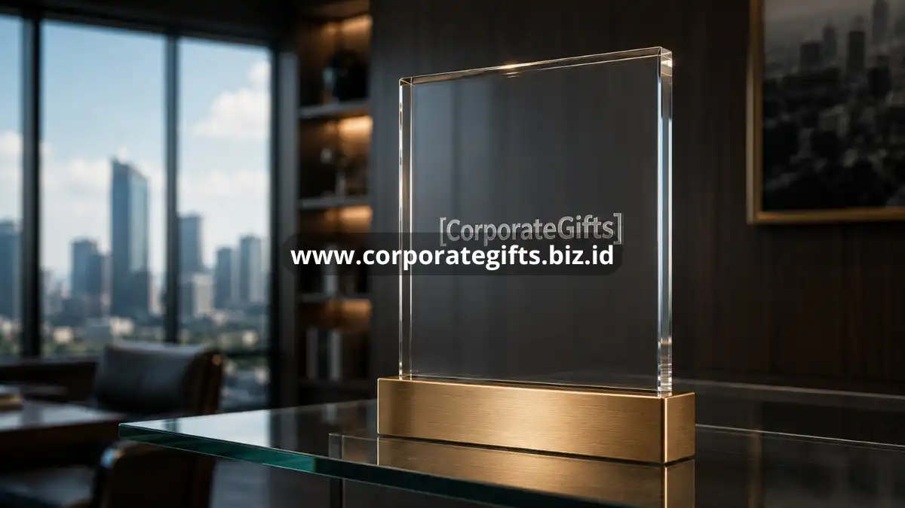

Poin Penting:
- Corporate gifting meningkatkan brand awareness melalui penggunaan barang berulang oleh penerima.
- Hadiah korporat memperkuat hubungan emosional yang berdampak pada loyalitas klien.
- Program corporate gifting yang konsisten menurunkan risiko churn pelanggan.
- Apresiasi melalui hadiah juga meningkatkan keterikatan emosional karyawan terhadap perusahaan.
- CorporateGifts membantu perusahaan merancang strategi hadiah yang selaras dengan tujuan branding.
Artikel ini mengulas secara rinci bagaimana corporate gifting memberikan dampak nyata pada branding perusahaan sekaligus loyalitas pelanggan dan karyawan. Banyak perusahaan masih memandang corporate gifting sebagai pengeluaran seremonial semata, padahal strategi ini memiliki dampak yang jauh lebih dalam terhadap persepsi merek dan hubungan jangka panjang dengan pelanggan maupun karyawan. Ketika dijalankan secara konsisten dan terencana, corporate gifting dapat menjadi salah satu instrumen customer relationship management yang paling efektif namun sering kali kurang dimanfaatkan secara maksimal.
Bagaimana Corporate Gifting Meningkatkan Brand Awareness Perusahaan?
Corporate gifting meningkatkan brand awareness dengan menghadirkan logo dan identitas perusahaan pada barang yang digunakan berulang kali oleh penerimanya. Setiap penggunaan barang tersebut berfungsi sebagai pengingat pasif terhadap keberadaan perusahaan.
Berbeda dengan iklan digital yang hanya tampil sesaat, souvenir kantor seperti tumbler, tas kerja, atau alat tulis memiliki umur pakai yang jauh lebih panjang. Barang-barang ini terus digunakan dalam aktivitas sehari-hari penerima, baik di lingkungan kerja maupun kehidupan pribadi, sehingga eksposur merek berlangsung secara berkelanjutan tanpa biaya tambahan setelah pemberian awal.
Efek ini semakin kuat ketika souvenir digunakan di ruang publik seperti kafe, bandara, atau ruang rapat eksternal, karena secara tidak langsung memperkenalkan brand perusahaan kepada orang-orang di luar lingkaran bisnis langsung.
Bagaimana Corporate Gifting Memperkuat Loyalitas Pelanggan?
Corporate gifting memperkuat loyalitas pelanggan dengan menciptakan hubungan emosional yang melampaui transaksi bisnis biasa. Pelanggan yang merasa dihargai secara personal cenderung bertahan lebih lama dibandingkan pelanggan yang hanya berinteraksi berdasarkan harga atau produk.
Prinsip psikologi resiprositas menjelaskan mengapa hal ini terjadi. Ketika seseorang menerima hadiah yang tulus, muncul dorongan alami untuk membalas kebaikan tersebut, baik dalam bentuk kelanjutan kerja sama, rekomendasi kepada pihak lain, maupun toleransi yang lebih besar terhadap kekurangan kecil dalam layanan.
Loyalitas yang terbentuk melalui corporate gifting juga cenderung lebih tahan terhadap godaan penawaran kompetitor. Klien yang memiliki ikatan emosional dengan perusahaan tidak mudah berpindah hanya karena selisih harga, karena mereka menghargai hubungan yang telah terjalin lebih dari sekadar pertimbangan biaya semata.
Selain itu, pelanggan yang loyal cenderung lebih terbuka memberikan masukan konstruktif dan lebih toleran terhadap kendala kecil yang mungkin terjadi selama kerja sama berlangsung, karena hubungan yang terjalin bersifat lebih personal dan saling menghargai.

Apa Dampak Corporate Gifting terhadap Keterikatan Karyawan?
Corporate gifting berdampak positif terhadap keterikatan karyawan dengan menumbuhkan rasa dihargai dan diakui atas kontribusi mereka terhadap perusahaan. Karyawan yang merasa dihargai cenderung memiliki motivasi kerja dan loyalitas yang lebih tinggi.
Pemberian hadiah apresiasi pada momen tertentu, seperti pencapaian target, hari jadi bekerja, atau perayaan akhir tahun, memberikan sinyal bahwa perusahaan memperhatikan kontribusi individu, bukan hanya berfokus pada hasil kerja secara kolektif semata.
Dampak ini turut memengaruhi budaya kerja secara keseluruhan. Lingkungan kerja yang menghargai karyawannya melalui tindakan nyata, termasuk pemberian hadiah, cenderung memiliki tingkat kepuasan kerja yang lebih baik dibandingkan lingkungan yang hanya mengandalkan kompensasi finansial semata.
Bagaimana Corporate Gifting Berkontribusi pada Retensi Pelanggan Jangka Panjang?
Corporate gifting berkontribusi pada retensi pelanggan jangka panjang dengan membangun kebiasaan interaksi positif yang konsisten antara perusahaan dan kliennya. Retensi yang tinggi mengurangi biaya akuisisi pelanggan baru yang umumnya jauh lebih mahal dibandingkan mempertahankan pelanggan lama.
Program hadiah yang dijalankan secara berkala menciptakan pola komunikasi positif yang berulang, sehingga hubungan bisnis tidak hanya terjadi saat transaksi berlangsung, tetapi juga pada momen-momen non-transaksional yang justru memperkuat kedekatan hubungan.
Pelanggan yang mendapatkan pengalaman positif secara konsisten, termasuk melalui corporate gifting, cenderung menjadi advokat merek yang secara sukarela merekomendasikan perusahaan kepada jaringan bisnis mereka tanpa perlu diminta.
Apa Peran Personalisasi dalam Memaksimalkan Manfaat Corporate Gifting?
Personalisasi berperan besar dalam memaksimalkan manfaat corporate gifting karena membuat penerima merasa hadiah tersebut memang disiapkan khusus untuk mereka, bukan barang seragam yang dibagikan secara massal. Sentuhan personal ini meningkatkan kualitas hubungan yang terbangun dari pemberian hadiah.
Elemen personalisasi dapat berupa nama penerima yang dicetak pada barang, ucapan khusus sesuai konteks hubungan bisnis, atau pemilihan jenis hadiah yang disesuaikan dengan preferensi dan kebutuhan penerima. Semakin relevan hadiah dengan profil penerimanya, semakin besar pula dampak emosional yang dihasilkan.
Personalisasi juga berlaku pada tingkat segmentasi penerima. Klien dengan nilai kontrak besar dapat menerima hadiah dengan kualitas dan kemasan yang lebih eksklusif dibandingkan penerima pada segmen umum, sehingga setiap kelompok merasa mendapatkan perhatian yang sesuai dengan posisi mereka dalam hubungan bisnis.
Manfaat personalisasi ini pada akhirnya bermuara pada peningkatan branding dan loyalitas yang lebih kuat, karena penerima mengasosiasikan pengalaman personal yang positif secara langsung dengan nama dan identitas perusahaan pemberi hadiah.
Bagaimana Mengukur Keberhasilan Program Corporate Gifting terhadap Branding?
Keberhasilan program corporate gifting terhadap branding dapat diukur melalui indikator seperti tingkat retensi klien, frekuensi repeat order, dan respons positif yang diterima setelah hadiah dikirimkan. Indikator ini membantu perusahaan menilai apakah strategi hadiah yang dijalankan sudah memberikan dampak yang diharapkan.
Selain data kuantitatif, umpan balik kualitatif dari klien dan karyawan juga menjadi indikator penting. Ucapan terima kasih, testimoni positif, atau peningkatan interaksi setelah pemberian hadiah menunjukkan bahwa program corporate gifting berhasil memperkuat hubungan emosional yang ditargetkan.
Evaluasi berkala terhadap program ini memungkinkan perusahaan menyesuaikan jenis hadiah, momen pemberian, dan tingkat personalisasi agar dampak branding dan loyalitas yang dihasilkan terus meningkat dari waktu ke waktu.
Ingin merasakan manfaat corporate gifting secara maksimal bagi branding dan loyalitas pelanggan perusahaan Anda? CorporateGifts siap membantu merancang paket hadiah korporat yang selaras dengan identitas dan tujuan bisnis Anda. Hubungi CorporateGifts sekarang untuk konsultasi gratis.
FAQ
1. Bagaimana corporate gifting meningkatkan brand awareness?
Corporate gifting meningkatkan brand awareness dengan menghadirkan logo dan identitas perusahaan pada barang yang digunakan berulang kali oleh penerimanya, sehingga menjadi pengingat pasif yang berkelanjutan.
2. Mengapa corporate gifting memperkuat loyalitas pelanggan?
Corporate gifting menciptakan hubungan emosional yang melampaui transaksi bisnis, membuat pelanggan merasa dihargai secara personal sehingga mendorong loyalitas dan prinsip resiprositas.
3. Apa dampak corporate gifting terhadap keterikatan karyawan?
Pemberian hadiah menumbuhkan rasa dihargai pada karyawan, yang berujung pada peningkatan motivasi kerja, loyalitas, serta menciptakan budaya kerja yang positif.
4. Bagaimana corporate gifting berkontribusi pada retensi pelanggan jangka panjang?
Program hadiah yang konsisten menciptakan interaksi positif secara berkala, mengurangi risiko churn, dan menurunkan biaya akuisisi pelanggan baru.
5. Apa peran personalisasi dalam corporate gifting?
Personalisasi membuat penerima merasa hadiah disiapkan khusus untuk mereka. Sentuhan personal ini sangat efektif dalam meningkatkan kualitas hubungan dan dampak emosional dari pemberian hadiah.
Butuh rekomendasi cepat untuk corporate gift?
Chat tim Pusat Souvenir & Merchandise Kantor untuk kurasi pilihan sesuai budget & kebutuhan brand Anda.